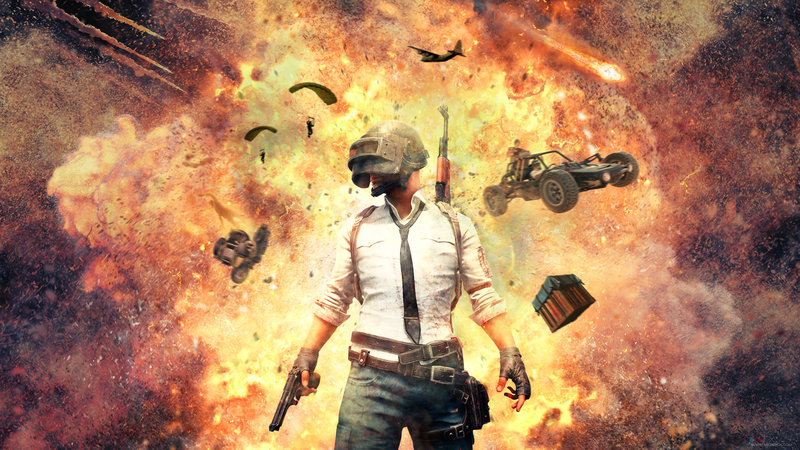
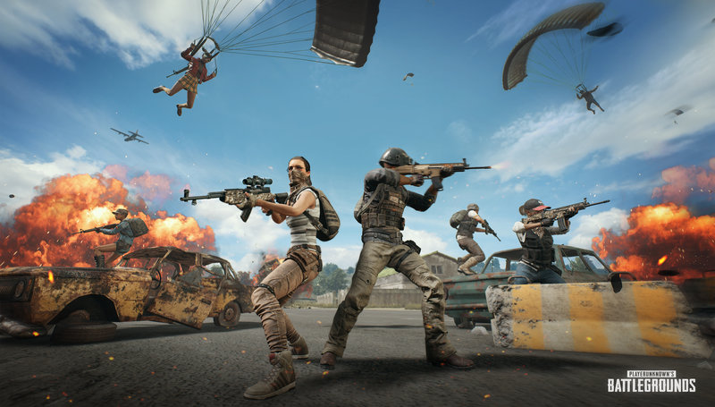
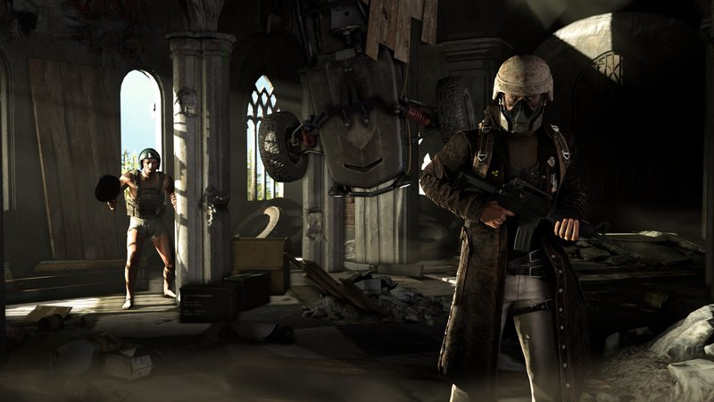
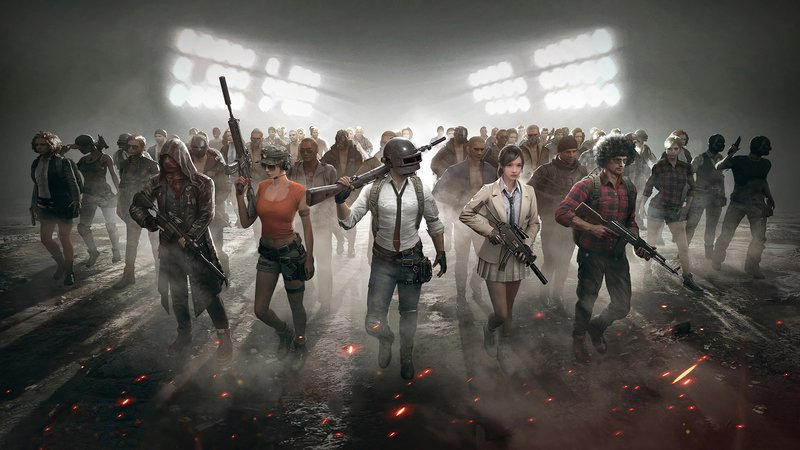
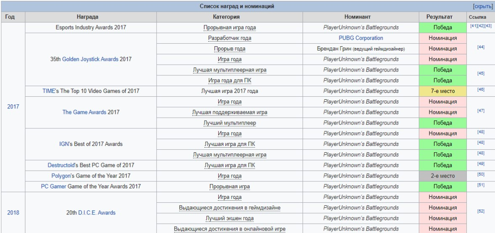

| Скачать PUBG | Посмотрите видео...... | Посмотрите видео..... |
|---|---|---|
| на пк | топ-1 против сквадов | один против всех |
| на андроид | где найти мумию с топ лутом | снайпер ниндзя с AWM |
| на IOS | смешные моменты | даже арабы бояться его |
Ранний доступ к онлайн шутеру был открыт в марте 2017.Стоит только вспомнить случай с турнира PUBG Global Championship 2019 с призовым фондом в 3 млн$ — в одной из битв игрок въехал на машине в здание, а транспорт взлетел вверх и пропал из радиуса обзора.Ето был супер фейл.
БОТЫ
Теперь про ботов. В марте 2020 года разработчики PUBG добавили в матчи ботов. Представители игры утверждали, что система призвана помочь новичкам освоиться в шутере: по плану количество оппонентов с искусственным интеллектом должно было сокращаться с ростом уровня игры пользователя.
ЧИТЕРЫ
Неотъемлемая часть каждого онлайн-шутера, и разработчикам приходится искать способы, чтобы с ними бороться. Создатели PUBG уже давно ведут эту войну, но пока что далеки от победы в ней. В конце 2019 года комьюнити-менеджер PUBG рассказал, что в «королевской битве» еженедельно блокируется более 100 тыс. аккаунтов. Но иногда под волну банов попадают и честные пользователи, включая профессиональных игроков, что лишний раз доказывает — система работает некорректно.
БАГИ
Трудно сказать што игра идеальна.А все потому што там есть баги.Навернека вы знали парочку.Ну конечно.Разработчики ведут долгую войну с этими недорозуменееми.
АРАБЫ
Теперь про арабов.К большому сожелению арабов не банит система.За што мы их тогда так ненавидит если их не банят? Да потомушто они разрывают обычных игроков на изи так как хорошо играют.
 БОЛЬШЕ ИНФЫ ЗДЕСЬPUBG MOBILE - это международная версия PLAYERUNKNOWN'S BATTLEGROUNDS Exhilarating. На этот раз, она привязана к вашему аккаунту в Google Play, поэтому вам не нужно создавать аккаунт в WeChat или QQ. В игре вы участвуете в смертельном сражении с более чем 100 реальными игроками, где только один из вас выйдет живым. Если вы хотите выжить в игре, вам придётся ходить по острову, собирая лучшее снаряжение и оружие, какое вы только сможете найти из нанесённого на карту. И вам следует торопиться, потому что игровая площадка уменьшается в размере каждые несколько минут. Практически все элементы из версии для ПК PUBG присутствуют. Элементы управления хорошо приспособлены для сенсорных устройств, так же как и другие объекты и интерактивные элементы в игре. Вы можете вводить здания, управлять транспортными средствами, настраивать прицелы, пользоваться аптечками, перепрыгивать стены и т.д.
В настройках игры вы можете изменить установки графики, адаптируя их к возможностям вашего устройства. Вы также можете настроить элементы управления, как при передвижении пешком, так и за рулем транспортного средства.PUBG MOBILE - это фантастическая адаптация оригинальных PLAYERUNKNOWN BATTLEGROUNDS, и так же, как и в оригинале, вы можете наслаждаться несколькими различными режимами игры: соло, парная игра, или отряды. Если вы играете с друзьями, вы можете даже поговорить с ними через микрофон вашего устройства. многопользовательская онлайн-игра в жанре королевской битвы, разрабатываемая и издаваемая студией PUBG Corporation, дочерней компанией корейского издателя Bluehole. Официальной дистрибуцией игры на территории России занимается Mail.Ru Group[3][4]. Игра основана на предыдущих модификациях для других игр, созданных Бренданом Грином (англ. Brendan Greene) под псевдонимом «PlayerUnknown», концепция которых была вдохновлена японским фильмом «Королевская битва» 2000 года. В итоге это привело к созданию самостоятельной игры, где Грин выступил в качестве ведущего геймдизайнера. В игре до 100 игроков, которые десантируются на остров, после чего ищут снаряжение и оружие, чтобы убить других участников и при этом самим остаться в живых. Доступная безопасная зона на внутриигровой карте со временем начинает уменьшаться, делая доступное пространство более тесным, чтобы сталкивать игроков между собой. Последний выживший игрок или команда побеждает в раунде. PlayerUnknown’s Battlegrounds была выпущена в Steam по программе раннего доступа 23 марта 2017 года для операционной системы Windows[5]. В течение первых семи месяцев после выхода было продано более 13 млн копий игры, а пиковое количество игроков достигло более 2 миллионов человек к концу года, что сделало её одной из самых популярных игр в Steam[6]. 31 октября продажи PUBG превысили 18 млн копий. Полная версия игры была выпущена 21 декабря 2017 года. Выход для Xbox One под издательством Microsoft Studios состоялся 12 декабря по программе раннего доступа[7], но уже 4 сентября 2018 года состоялся официальный релиз. 19 марта 2018 года была выпущена мобильная версия PUBG Mobile для Android и iOS по модели free-to-play. Версия для PlayStation 4 была анонсирована в ноябре 2018 года, и выпущена 7 декабря 2018 года. многопользовательская онлайн-игра в жанре королевской битвы, разрабатываемая и издаваемая студией PUBG Corporation, дочерней компанией корейского издателя Bluehole. Официальной дистрибуцией игры на территории России занимается Mail.Ru Group[3][4]. Игра основана на предыдущих модификациях для других игр, созданных Бренданом Грином (англ. Brendan Greene) под псевдонимом «PlayerUnknown», концепция которых была вдохновлена японским фильмом «Королевская битва» 2000 года. В итоге это привело к созданию самостоятельной игры, где Грин выступил в качестве ведущего геймдизайнера. В игре до 100 игроков, которые десантируются на остров, после чего ищут снаряжение и оружие, чтобы убить других участников и при этом самим остаться в живых. Доступная безопасная зона на внутриигровой карте со временем начинает уменьшаться, делая доступное пространство более тесным, чтобы сталкивать игроков между собой. Последний выживший игрок или команда побеждает в раунде.
Мобильная версия игры была разработана китайской корпорацией Tencent, которая владеет популярным в Азии мессенджером WeChat и активно инвестирует в популярные игры (например, в League of Legends). Как и в десктопной версии игры, 100 игроков высаживаются на остров размерами 8×8 км, где им необходимо найти оружие, патроны, средства передвижения и выжить под напором других участников «Королевской битвы» и сужающегося игрового пространства. PlayerUnknown’s Battlegrounds была выпущена в Steam по программе раннего доступа 23 марта 2017 года для операционной системы Windows[5]. В течение первых семи месяцев после выхода было продано более 13 млн копий игры, а пиковое количество игроков достигло более 2 миллионов человек к концу года, что сделало её одной из самых популярных игр в Steam[6]. 31 октября продажи PUBG превысили 18 млн копий. Полная версия игры была выпущена 21 декабря 2017 года. Выход для Xbox One под издательством Microsoft Studios состоялся 12 декабря по программе раннего доступа[7], но уже 4 сентября 2018 года состоялся официальный релиз. 19 марта 2018 года была выпущена мобильная версия PUBG Mobile для Android и iOS по модели free-to-play. Версия для PlayStation 4 была анонсирована в ноябре 2018 года, и выпущена 7 декабря 2018 года.
ПАБГ ВПЕРВЫЕ ТЕРЯЕТ ПОПУЛЯРНОСТЬ
Популярность PUBG начала резко снижаться, это значит то, что игроки наконец перестали мириться с недочетами игры. Как видно на графике, ситуация была стабильной, но после официального выхода игры она только обострилась. РЕАКЦИЯ КОМЬЮНИТИ После выхода PUBG из раннего доступа в Steam игроки начали обсуждать на Reddit ошибки и баги игры всё чаще, а в 2018 году стали высказывать свое мнение крупными постами. Один из игроков под никнеймом c_c_c3 поделился своим мнением с сообществом: «Я рад, что игру всё больше критикуют, люди уходят из игры. Это неплохой шаг в индустрии видеоигр, когда игроки наконец говорят „Это не приемлемо“ и принимают меры, вместо того, чтобы просто оставаться в игре. Плохое программирование, ужасные сервера, на которых постоянно проводится обслуживание. Fortnite сносит PUBG с дороги в плане качества, и хоть вам может и не понравится игра, Epic games прорабатывает свою игру больше, чем PUBG. Я буду рад, если эта игра будет исправлена, будет пересмотрено отношение к фанатам ленивыми и молчаливыми разработчиками.» ВЫВОДЫ Проработка игры, сервера, мелкие детали: всё на довольно низком уровне — для игры, которая вышла из раннего доступа. Пока разработчик не схватится за голову, популярность игры будет падать. Раньше это было простительно, ведь игра была не выпущена, ну, а теперь подобные отговорки уже не принимаются.
В игре PlayerUnknown's Battlegrounds насчитывается достаточно большое количество оружия, предназначенного для устранения ваших противников. Наличие хорошего оружия, наравне с толковой броней и достаточным количеством медикаментов - один из главных факторов, дающих шанс на как можно более долгое и как можно более успешное выживание на протяжении матча. Всего можно носить с собой пять видов оружия - два основных, пистолет, холодное оружие и гранату. Оружие можно найти повсеместно по территории карты, однако наиболее сильные его представители спавнятся крайне редко, или могут быть найдены только в эйрдропе. На данный момент (29.01.2018) в игре насчитывается 37 видов оружия, включая кулаки, гранаты, арбалет и пр.